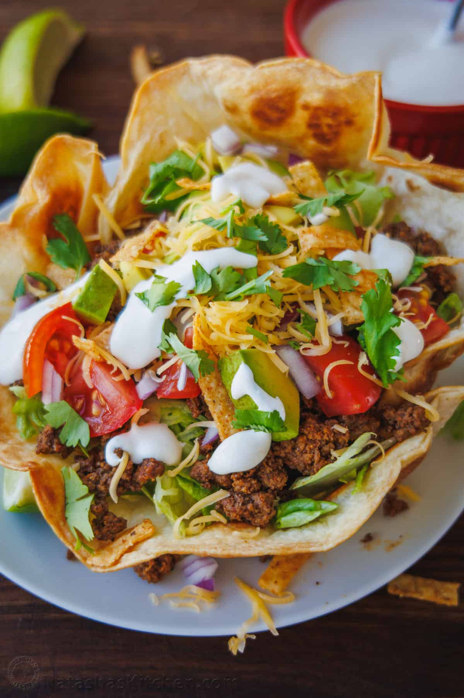

Taco Salad

A taco salad is basically a deconstructed taco served in a bowl. If you want to re-create a Mexican restaurant
experience, serve this salad in a crispy Tortilla Taco Salad Shell for a fun twist.
Ingredients
- 4 Tortilla Taco Salad Bowls, optional
- 1 lb lean ground beef, 90/10
- 3 Tbsp Taco Seasoning, or 1 packet
- 1/2 cup water
- 1 iceberg lettuce, medium head, chopped
- 1 avocado, peeled, pitted and sliced
- 1 cup pico de gallo, or to taste
- 1/2 cup Mexican cheese blend, or to taste
- 1/2 cup tortilla strips or chips
- 1/4 cup cilantro, chopped
- 1 lime, cut into wedges to serve, optional
Steps
- Make Crispy Tortilla Bowls if using. While they bake and cool, proceed with the recipe.
- In a large skillet over medium heat, brown your beef. When there is no pink left on the meat, spoon out all
of the excess fat then add taco seasoning and 1/2 cup water. Cook, stirring occasionally, for 3-5 minutes.
Remove from heat and cool until it’s lightly warm or room temperature.
- In a small bowl or measuring cup, add the dressing ingredients and stir to combine. Refrigerate and let the
flavors meld while you prepare your toppings.
- Chop lettuce and place into serving bowls (serves 6 as a side salad or 4 as a main course). Divide ground
beef between the bowls over the lettuce.
- Add remaining toppings as desired then garnish with cilantro drizzle with the dressing and serve with lime
wedges to squeeze over the salad.